- 00 开篇词 升维思考，是设计师有效成长的第一步.md.html
- 01 业务周期：0-1-10-100-N的发展策略.md.html
- 02 商战模式：如何在商业竞争下突出重围？.md.html
- 03 市场洞察：如何找寻差异化撬动支点？.md.html
- 04 用户洞察：不懂用研的设计师不是好职场人.md.html
- 05 用户画像：是形式主义还是真的有效？.md.html
- 06 用户旅程：挖掘不同用户的核心机会点.md.html
- 07 职场晋升：看懂晋升的“游戏规则”.md.html
- 08 设计价值升级：五层进阶突破成长.md.html
- 09 基础价值 核心三原力：如何将需求转化为设计稿？.md.html
- 10 基础价值 第一性原理：从问题本质解决问题.md.html
- 11 基础价值 设计复盘：只是量化设计结果吗？.md.html
- 12 二级价值 负向网兜：如何全面发现负向问题？.md.html
- 13 二级价值 设计自驱：如何做好项目Owner？.md.html
- 14 二级价值 自驱合作：如何反内卷处理合作关系？.md.html
- 15 三级价值 增长误区：思维惯性陷阱和虚荣数据.md.html
- 16 三级价值 用户增长历程：AARRR是万能的吗？.md.html
- 17 三级价值 产品增长：如何做好产品创新？.md.html
- 18 三级价值 运营增长：如何自驱营销活动和投放？.md.html
- 19 三级价值 品牌增长 抢占心智，赢得人心红利.md.html
- 20 三级价值 增长实操：如何“步步为营”推动落地？.md.html
- 21 四级价值 L型赋能：让T型人才发挥更大价值.md.html
- 22 四级价值 “网状对比”解决共性痛点.md.html
- 23 五级价值 商业画布：设计师可以担任业务方吗？.md.html
- 24 五级价值 共创洞察：如何做好一次完善的workshop？.md.html
- 25 五级价值 领导力觉醒：写给新晋管理者.md.html
- 26 工作选择（上）：2B or 2C设计师？如何规划领域？.md.html
- 27 工作选择（下）：大厂 or 小厂？如何选择赛道？.md.html
- 28 人才地图：认知自我，成为高潜力人才.md.html
- 29 成长历程：如何从设计小白成长为团队负责人？.md.html
- 30 冰山模型：如何成为让面试官欣赏的“面霸”？.md.html
- 31 作品集指导：什么是面试官喜欢的作品集？.md.html
- 用户故事 什么是职场设计师进阶的正确姿势？.md.html
- 结束语 突破自我，成人达己.md.html
- 捐赠
19 三级价值 品牌增长 抢占心智，赢得人心红利
你好，我是小乔。
行业内，许多过往的课程、图书，都没有把品牌作为增长手段之一，大部分都是《增长黑客》的流量思维，也有一些会加入产品极客的方法，也就是我们讲过的产品创新和运营推广。但仅仅有产品+运营的增长方法，在当今时代，已经不再全面。
在此基础上，升级品牌策略，在恰当的线上、线下渠道透传品牌价值，可以帮助业务抢占用户心智。在人口红利逐渐萎缩、人心红利逐渐放大的当今互联网行业，品牌策略对于业务的增长和市场地位的提升，有着不可忽视的加成作用。
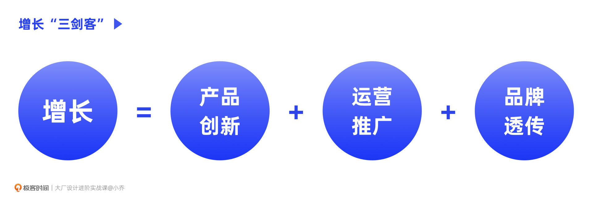
这节课，我们就一起来探讨如何做好品牌透传，抢占用户心智，让用户可以在第一时间想到我们的产品。
为什么要做品牌透传？
说起品牌项目，你是否会想到LOGO升级、营销活动KV、IP形象？是的，这些都是品牌项目中的典型输出物，但LOGO、KV、IP，其实都只是品牌项目中的一小部分。
或许你还记得小米更新LOGO的案例。从2017年开始，小米就在筹备此事，找遍了全世界的设计师，最后由平面设计大师原研哉来负责。在2021年的春季新品发布会上，雷军公布了小米的新LOGO。许多外行人直呼雷军被骗了，许多内行人也直呼雷军被骗了。
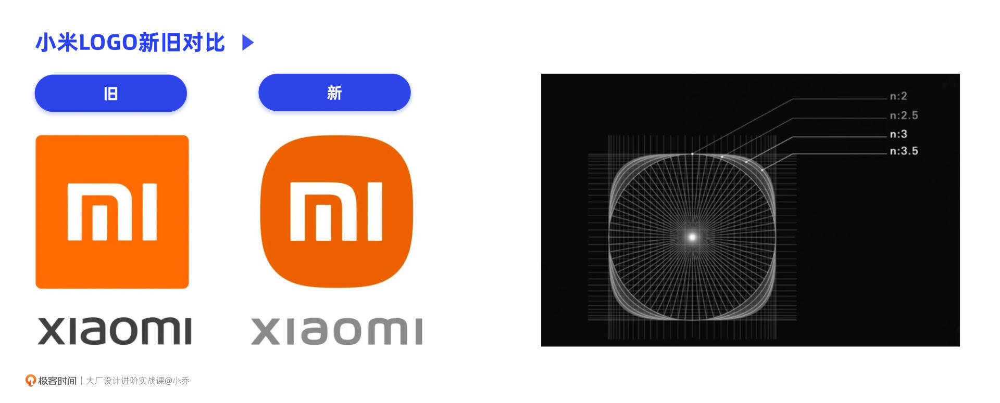
但其实，这个项目的价值已经到位。从传达的含义来说，新的小米LOGO正如原研哉自己表达的，具备“Alive”设计理念。有着“超椭圆”数学之美的小米新LOGO，代表着小米科技的蓬勃发展，因为科技越是进化，就越接近生命的形态。但比这个解释更重要的是，这是原研哉设计的，所以它造成了巨大的传播热度，且让用户印象深刻。
许多公司，会花费大几百万做品牌策略，再花个几百万做各个渠道的设计素材和物料，而且同时涉及到品牌部、市场部、设计部、运营部、公关部等各职能人员的工作。品牌项目的价值到底是什么？为什么企业愿意花这么大精力和财力做品牌这件事呢？
作用1：提升认知度
消费者在面对同类产品选择时，出于心理效果会优先选择熟悉的产品。而品牌的作用之一就是在消费者心中留下产品概念，这决定了用户在产生需求时，能否在第一时间想到这个品牌，也就是第一提及率。比如想打车了，第一反应是打开滴滴，而不是其他的App；想找一家饭店吃饭时，第一反应是打开大众点评。
作用2：建立归属感
随着生活水平的提高，消费者从最初追求物美价廉的消费习惯，渐渐转变为高品质的生活需求，而品牌就是不同品质的划分标志。这些品牌的定位，代表了特定人群的核心价值和归属感。比如80后热衷于星巴克，90后青睐瑞幸咖啡，而00后，他们情愿点5公里以外的Manner coffee，也不愿意买楼下的星巴克。同时，大企业也在不断打造不同的品牌层次，来覆盖不同类型的用户。
作用3：形成品牌溢价
品牌代表着企业的竞争力。企业产品参与市场竞争，大致有三个层面：第一层是价格竞争，第二层是质量竞争，第三层是品牌竞争。商家们越来越意识到，没有品牌，缺少竞争壁垒，就只能不停打价格战。GMV=流量X转化率X客单价X复购率，我们以快消行业来说，雅诗兰黛和欧莱雅，因为品牌知名度和口碑都很好，品牌自带流量的占比高达70%，只有30%依赖流量广告。
品牌项目的构成
一个完整的品牌项目全案，是庞大而复杂的，通常由三大部分构成：品牌策略、品牌设计和品牌渠道。
设计师在企业中参与最多的部分，往往已经偏向下游。通常已经知道了这个产品的核心关键词，再从关键词出发，推导出颜色、超级符号、辅助图形、动效、使用规则等，做设计交付。
但如果你以为这就是品牌项目的全貌，那就小看它了。具体产出设计方案的能力，只是品牌项目的“地板能力”。而我们今天想探讨的，是完整的品牌项目规划和推导方法，这决定了“天花板能力”。
如何做好品牌项目？
通常在业务发展到成长期和成熟期后期，都需要制定品牌策略。业务在引入期时，还没有那么清晰的品牌定位，更多是在市场中不断验证并存活下来的过程，因此LOGO、主色等也都是先凭感觉上线。但进入成长期后，就需要制定品牌策略，以此提升用户认知。当业务发展到成熟期的后期，需要发展第二条增长曲线时，也需要根据新的方向做品牌升级。
有品牌意识的企业，或一些重点项目组，往往会邀请咨询公司，共同完成品牌策略的制定。与咨询公司合作，完整输出品牌策略、品牌设计、品牌渠道，通常需要4个月。如果是国际咨询公司，由于时差和跨国家调研等原因，时间需要更久。许多项目会因为时间或预算的问题，无法找咨询公司合作，此时就更需要设计师带头做好品牌项目。
我在转行进入互联网行业之前，曾在咨询公司工作过，有幸与奔驰、smart、安利、各大银行、华为等公司集团合作过；在现在的公司和业务，品牌项目也由我团队，与国际知名的品牌咨询公司合作。这些经历，让我同时具备了甲方和乙方的经验。
接下来就以我之前负责过的一个品牌项目的规划为例，探讨一下完整的品牌咨询项目的大致流程。我们可以从图中看到，整个流程分为四大步骤：前期调研准备、产出品牌策略、产出品牌设计、产出渠道透传方案。
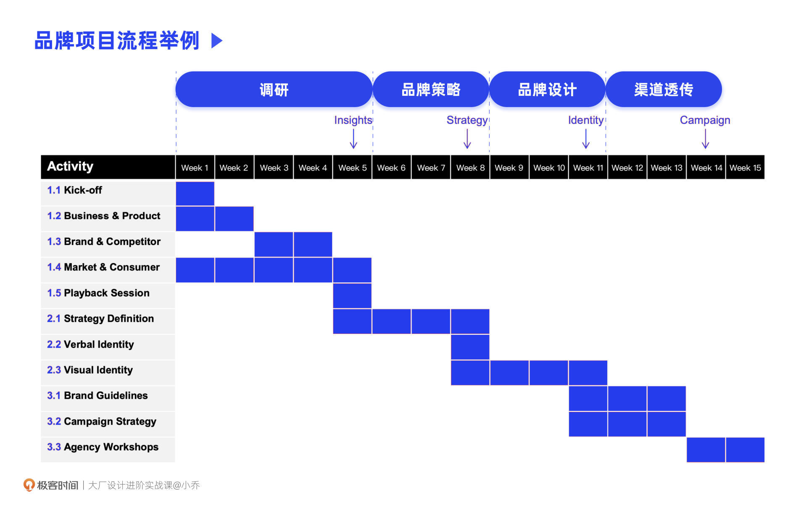
下面，我将和你分享一些常用的品牌分析方法，即使没有咨询公司的帮助，也可以独立完成。
前期调研准备
想要有所输出，必先有所输入，前期的调研准备工作，决定了整个品牌项目的成败。通常这个过程会包含决策者访谈（Stakeholder Interview）、用户访谈、竞品调研等过程。调研的核心在于，充分理解业务方的目标预期，也充分参透市场和用户的需求，找准品牌可以突出重围的定位方式。
在做决策者访谈和用户访谈时，我们就可以运用到关键词选择法、图片选择法和品牌迁移法。在之前的用户调研课程中，我们已经讲过具体的1:1定性访谈方法，这节课将重点讲述3种品牌调研方法，可以用在我们的定性访谈中。
方法1：关键词选择法
根据项目未来可能的发展重点，梳理关键词，与项目的利益相关者开展一次workshop，每个人在进行投票选择后，需要说出选择的理由。
通常利益相关者由这个业务的各级别、各职能线的leader们组成。在workshop中需要注意的是，在一些级别公开的公司，先鼓励级别低的管理者投票，最后再让级别高的管理者投票。因为先让高管发表观点，会导致低级别的管理者跟从选项。如果是级别不公开的公司，并且在日常工作中，就鼓励下级可以有理有据地反驳上级，则没有顺序上的顾虑。
同时，为了激发决策者们的观点表达，关键词建议在10个以上，且关键词的意思不要过于相近，在一些未决策的方面可以用两个相反的词。并且如果决策者认为这里没有TA想说的词，可以加入更多关键词。最后，在所有的关键词中，鼓励用户针对我们的提问，选择1-3个进行回答。
以一款社交产品为例，它的关键词也许是：熟人社交、陌生人社交、年轻化、全民化、落后地区、发达地区、简洁、高端、亲和力、热情、活在当下、永久保留等等。
哪个关键词被投票的次数最多并不重要，重要的是决策者在投票后，引发TA选择这个词的背后原因。比如两个人都选了“永久保留”，一个人是认为这个App里所有的聊天记录、图片、视频都是人与人的记忆，需要保留，像记忆线一样随时可以回顾；而另一个人是觉得这个App里的好友是永久保留制度，不可以删除，因此在添加为好友时需要谨慎，鼓励用户珍惜友谊。可见，同一个词背后，也许是完全不同的需求。
我们要做的，是引导决策者说出背后的原因，并将这些原因归纳分析。
在与用户做定性访谈时，同样可以用关键词选择的方法，引导用户说出TA期待的产品是怎样的。
方法2：图片选择法
图片选择与关键词选择的原理类似，只是这次是以可视化的方式呈现。
与关键词选择一样，图片选择同样既可以在决策者访谈中使用，也可以在用户访谈中使用。除了询问产品定位以外，也可以作为情绪板，让受访者选择TA偏好的风格，并给出具体理由。
最后，我们就可以根据用户说出的原因，分不同维度，进行归纳整理。
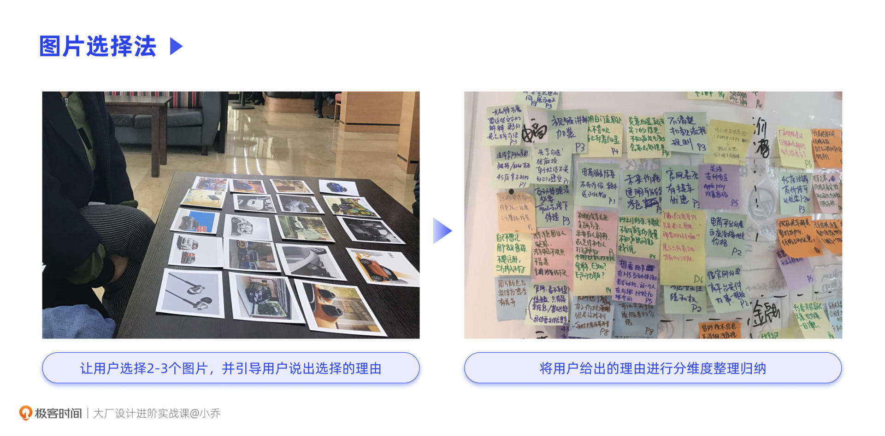
下图是我曾经做过的两次品牌项目，案例1是为某个海外社交App定义品牌风格，案例2是为smart做品牌升级。通常用户偏好的风格会有1-3种，当几种风格的占比都较为均衡时，可以在输出多套品牌视觉方案后，再让决策者和用户做一次选择。
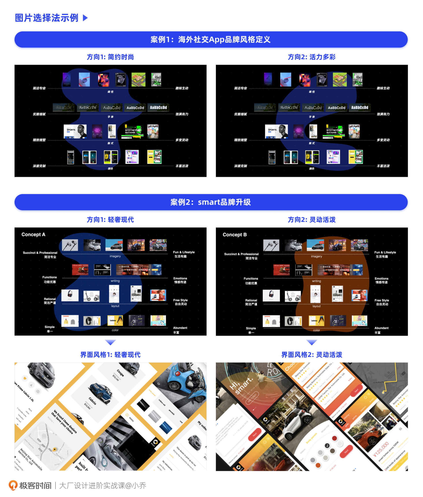
方法3：品牌迁移法
品牌迁移法，就是通过跨领域品牌对标的方法，让受访者表达对于这个业务在不同维度上的期待。而对于品牌来说，就需要通过产品功能、服务、宣传、线下环境等各个触点把品牌心智传达给用户。
比如说，我们要为一个茶叶业务做品牌定位，它的核心用户究竟是年轻人，还是中老年人？是做成新时尚品牌，还是贵重高级品牌？我们就可以引导用户在不同维度上，跨领域对标相似品牌。
如果我们问，对标零售行业，你期待和哪个店面相似？用户也许想到的就是空间上的感受；当我们问，对标快消品牌，你觉得这个品牌像谁？用户也许就会思考年龄定位和产品出新的节奏等方面。
通过品牌迁移法，我们就可以分析出，在品牌定价、服务、产品功能、线下风格、线上风格、核心用户、品牌核心价值等方面，业务决策者和用户，分别希望做成怎样的品牌。
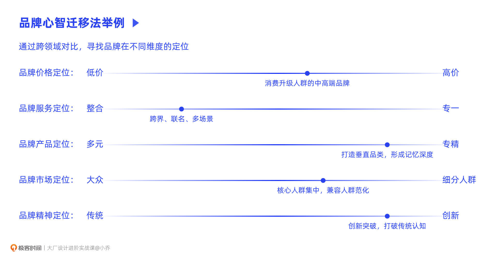
如果遇到业务方和用户的期待不同，我们该如何处理呢？大部分时候，会更以用户的视角为重，但企业需要引领用户，比如在品牌定位上更向未来趋势倾斜一些，或者风格审美上，比用户的审美更向前半步。
品牌策略
品牌项目中最关键的部分，当属品牌策略。如同北极星指标在引领业务的发展方向一样，品牌策略也在引领整个品牌项目的方方面面。
品牌策略，包含了这个品牌在市场中的定位、品牌口号（Slogan）、核心价值、品牌调性等方面。
比如在国内掀起茶饮热潮的小罐茶，品牌市场定位是面向中青年高端商务人群的，为这些并不那么懂茶，但又需要商务社交的用户，提供日常品用和送礼服务。以“小罐茶，大师作”为Slogan，以8名茶艺大师作为背书，凸显品质保障。
为什么要选择茶叶的赛道呢？茶业就像翡翠、文玩市场一样，品牌集中度很低，如果现在让大家报出有名的茶叶品牌，都不一定可以想得出来。在小罐茶出现之前，国内最大茶品牌所占的行业份额不到0.5%。
真正懂茶的专业茶友，往往会绕过品牌茶饮，通过自身的资源和渠道获得一手好茶。但对于大部分中青年商务精英来说，需要通过茶叶来满足社交需求，但痛点在于传统茶道有专业和复杂度，他们渴望更简约的喝茶方式。因此，小罐茶定义了现代的、简约的、保障品质的品牌理念，提供了便捷的“一罐一泡”新喝茶方式，因为定位高端，也成为了送礼好选择。
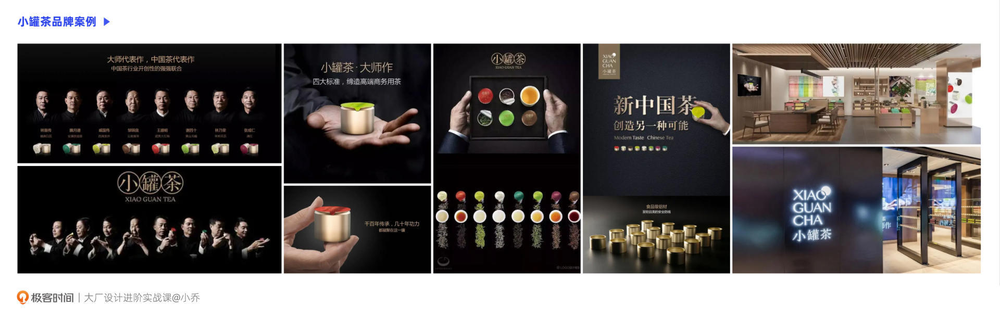
当品牌策略定义清晰后，小罐茶围绕品牌定位和核心价值，进行了高端的包装设计，撕了3万张铝膜来测试撕开的费力度；线下门店也邀请了苹果体验店知名设计师Tim Kob亲自设计，凸显现代化，提供看、听、触、嗅、尝的全方位线下体验，一改用户对于茶文化的固有认知；电视广告也以8位大师为主，向用户传达了高端、专业的感知。
通过这个案例，相信你已经明白，只有具备清晰的品牌定位后，才能让产品从众多商业竞品中脱颖而出。围绕品牌策略，我们才能推导得出产品的LOGO、字体、颜色、辅助图形、动效风格等等，并且根据品牌策略来规划线上、线下各个渠道的透传策略。
品牌设计
当业务具备清晰的品牌定位后，就可以进入下一个阶段“品牌设计”了。这个部分是我们设计师最擅长的领域，推导方法也很简单，但设计水平的差异在于长期积累的审美、经验和技法能力。
以2022年钉钉升级品牌为例，钉钉的Slogan从最初的“一个工作方式”到“让工作学习更简单”，再到现在的“让进步发生”，传达了钉钉的核心价值——在当今的数字化浪潮中，用自带的引力，以数字服务千行百业，助推每一个组织与个体加速进入数字化时代，让进步发生。
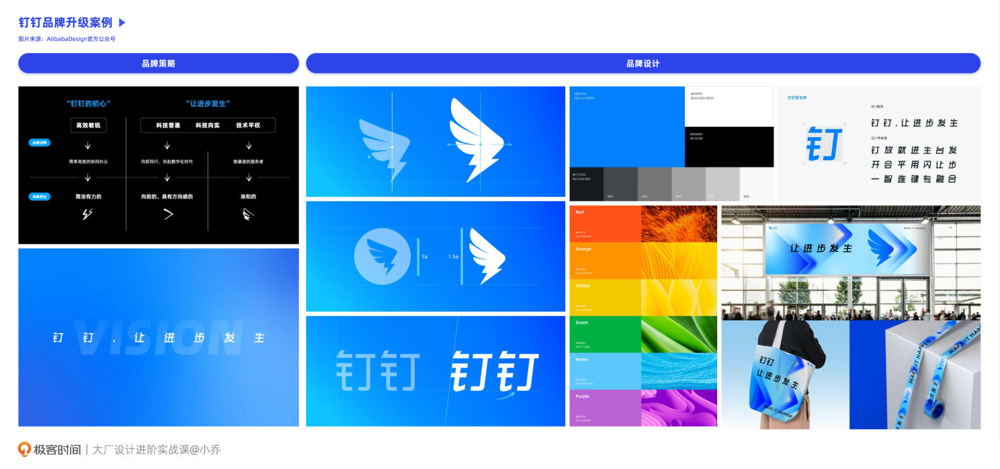
我们以LOGO为例来说，过往的LOGO使用翅膀和闪电的意向，传递了“高效”的核心价值，但在过往被业内吐槽过重心不稳，这次更新，倾斜角度进一步体现了“蓄势待发”的感受，传达了“进步”的新定位。
阿里自2019年UCAN大会上推出“阿里巴巴普惠体”以来，也一直在强调普惠精神。钉钉的品牌升级也同样响应了普惠的号召，打破了原本的圆形外框，体现了钉钉打破认知，把视野放之四海，实实在在的以数字技术服务助力千行百业的态度。
“让进步发生”和“普惠开放”的两个核心理念，在这次钉钉品牌升级中，被诠释得淋漓尽致。
除了LOGO以外，品牌设计的部分还包含了超级符号、辅助图形、主色、字体、IP、动效等等丰富的内容，那是否每一项都要做呢？其实不需要，正像我们整个课程都在强调的，做事之前要先回归本质原因，也就是项目目标与价值。
以IP来说，我们的业务是否需要做IP形象呢？判断标准是什么呢？我们通过两个案例来看一下。
以抖音为例，抖音如果做了IP形象，有可能限制品牌。所以对抖音来说，做IP形象没有明确的价值，但有明确的负面痛点。品牌的核心还是为了抢占用户心智，把业务的形象传达到位，让用户记忆和传播。抖音的IP其实就是抖音的用户，喜欢跳舞和音乐，后来用户泛化，现在“记录美好生活”，用户就是代言人。
那为什么阿里的许多业务需要IP形象呢，天猫、淘宝、飞猪、钉钉等各个业务的IP形象一起构成了“Alibaba zoo”。因为用户曾经对这些品牌还没有非常明确的心智时，IP形象可以帮助用户记忆，并传达亲切感。IP也不一定是具体的玩偶形象，淘宝、天猫还做了许多线上、线下的营销IP，比如“新势力周”、“双11”、“淘宝造物节”、“天猫双11狂欢夜晚会”等等，这些自制IP进一步提供了更多用户参与的场景。
品牌设计的底层逻辑，就是视觉基因的组合。超级符号、颜色、字体、动效等，都是在用不同视觉表达做组合，核心目标是将品牌理念表达到位。
品牌渠道
当有了品牌策略和品牌设计，我们又该如何传达给用户呢？品牌和用户之间，需要媒介才能完成透传，而媒介就是品牌透传渠道，包含线上、线下多种形式，需要根据业务的定位情况和用户类型，规划合适的渠道和素材。如下图所示，将品牌心智传达给用户，就需要通过产品功能、官网、活动、线上线下广告、空间环境、行业大会等各个触点。
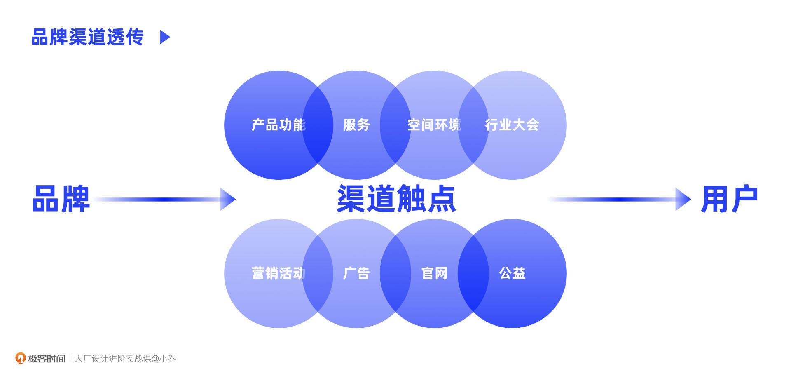
在各个渠道做市场品牌推广，需要注意两件事情：一个是渠道选择和素材制作，都要与业务自身定位相符；另一个在于，不要被传统渠道限制了思维，渠道和触点是可以自我创造的。我们以具体案例来探讨这两点。
渠道和素材与自身定位相符
比如电视广告，整体故事线的设计、拍摄风格、选什么明星代言、广告台词，都是需要慎重考虑的。
以江南春讲过的沃尔沃为案例，汽车行业的竞争是非常激烈的，但是沃尔沃却凭借着“安全”的定位突出重围。
他当时问那些销售冠军，现在很多豪车都有刹车标配啊，为什么要选沃尔沃呢？但销售冠军告诉他，豪车有不同档次的安全配置，但沃尔沃从低端到高配，在安全配置上是一模一样的，因为人的生命是不可以分等级的。
江南春根据销售冠军的推销经验，总结了沃尔沃的安全性能：“当别人用65公里时速去做撞击实验，沃尔沃坚持用80公里的时速做撞击实验；当别人开始学会沃尔沃的主动刹车技术时，沃尔沃已经开创了智能避让技术。在别人看来安全是一种标准，在沃尔沃看来安全是一种信仰。”
这是从机车性能的角度总结的广告文案，是刚性的，同样还可以从用户的角度来写，走柔性路线。因为用户在意的是家人的安全。江南春说，如果是朗朗代言，就该这样写：“别人在意的是外表的豪华，而我更在意家人的安全。没有什么豪华比得上家人的安全，沃尔沃，护我所爱。”为什么他会选择朗朗呢，因为朗朗和他的太太作为代言人是非常柔性的，也代表了当今社会的美好家庭。
渠道触点可以自我创造
我们最习以为常的传播渠道，线上大致是各大社交媒体、抖音KOL软广；线下大致是电视广告、综艺节目冠名、公交车外皮、广告牌、线下门店、线下商会等等。除此以外，其实根据业务自身的特性，还有许多方法可以更出效果。
大家知道“得物App”，可能是因为刷抖音刷到了广告，但我身边的许多朋友，都是因为得物的快递盒知道了它。取快递时，在一片卡其色牛皮纸中，得物的极光蓝总是可以在第一时间吸引大家的目光。因为盒子美观，甚至有很多家长和孩子一起改造得物的快递盒，改成小恐龙穿在身上。
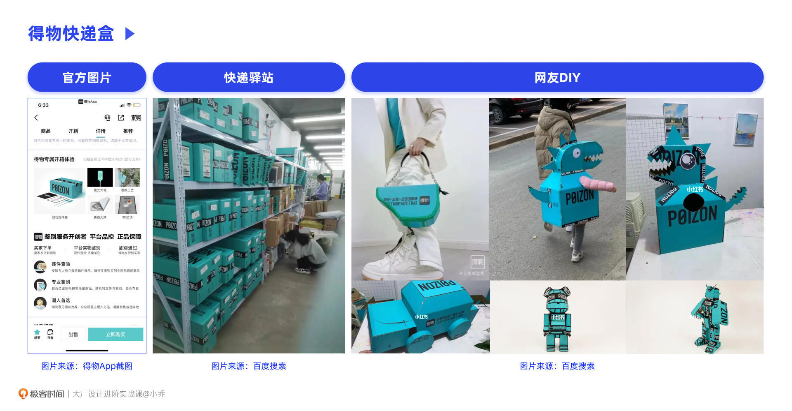
顺着得物的思路，我们一起思考一些适合品牌传达的触点。
如果我们做了一款健康餐品牌，就可以找寻一些中高档办公楼，在附近开店，同时与他们的公司做活动推广。
如果我们做了一款健康儿童零食品牌，就可以找寻一些高档小区，并且住户要以30岁以上的高收入家庭为主，我们可以在小区的电梯中投放广告。为什么选择电梯呢？因为高档小区可以做广告的地方不多，在电梯中，人们往往无所事事，或只能与邻居尬聊，此时目光停留在电梯广告上就是一件顺其自然的事情。
樊登老师也讲过一个案例，对于一家代驾公司来说，除了线上渠道推广外，更应该在各大夜场的洗手间贴广告。你可以想一想，这是为什么？
今日小结
今天，我们一起探讨了品牌透传对于企业与业务的重要性，以及具体实操时的过程与方法。企业愿意花巨大的物质与人力成本做品牌透传，是因为从认知度、信任度和品牌溢价的角度，都可以为企业带来长期的生命力。
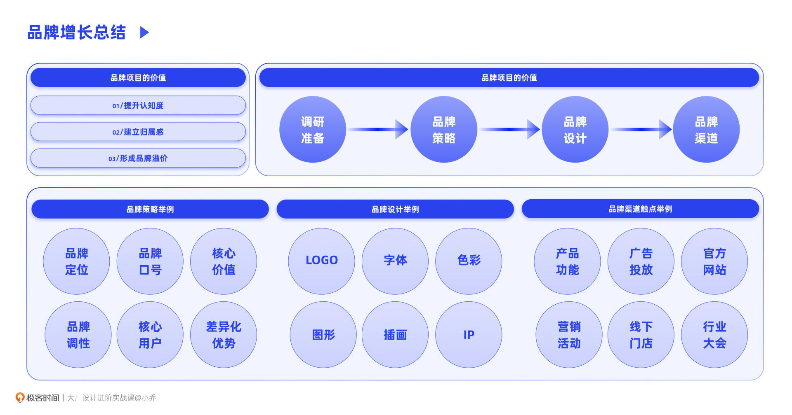
在品牌项目中，主要分为4个阶段：第一，前期调研准备，除了我们之前讲过的用户访谈、市场数据分析、竞品调研以外，还可以在决策者访谈和用户访谈中融入关键词选择、图片选择和品牌跨领域迁移的方法，来梳理业务方与用户的需求；第二，根据调研结论推导品牌策略，包含品牌定位、Slogan、核心价值等；第三，我们设计师最为擅长的品牌设计部分，根据品牌策略推导相应的视觉表现元素；第四，根据业务自身的特质，选择合适的线上、线下渠道，进行品牌心智的透传。
到此为止，我们探讨了从产品、运营、品牌三个角度带来业务增长的方法。但在实际推动增长项目时，往往因为涉及到不同部门、职能团队的利益，也会对产品架构有较大改动，可能会遇到推动困难的问题。下节课，我将以我自己的案例和你聊聊推动方法。
互动时刻
回顾你过往的工作，是否做过品牌相关的项目？在推动项目的过程中，还有什么值得大家学习的方法经验呢？
欢迎把你的经历和思考在留言区分享出来，与我和其他同学一起探讨。我们建立了一个读者交流群，欢迎你的加入！如果你觉得有所收获，也欢迎把文章分享给你的朋友一起学习。我们下节课见。
© 2019 - 2023 Liangliang Lee. Powered by gin and hexo-theme-book.